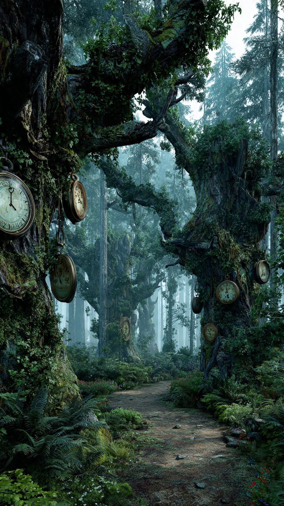
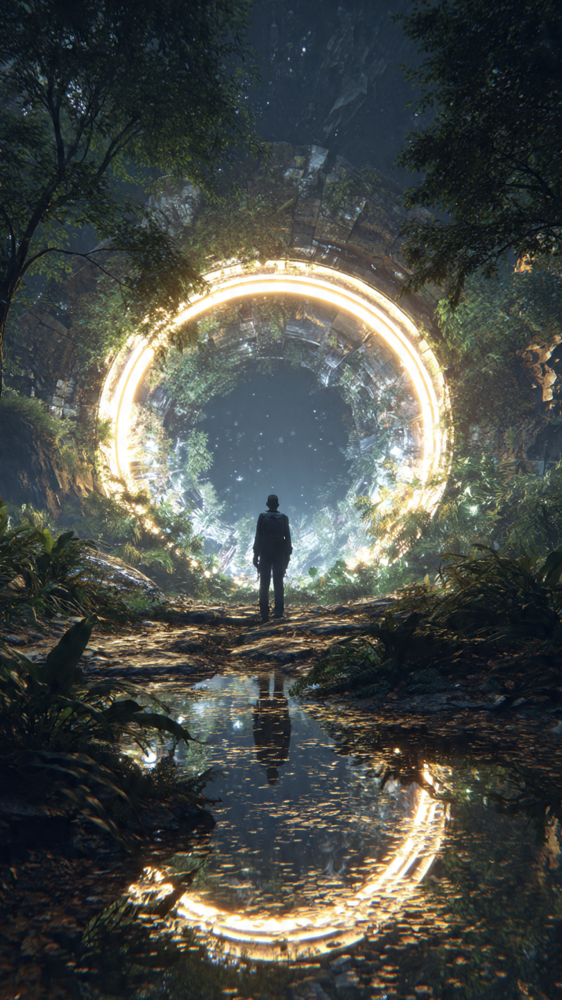

في أقصى شمال المملكة، كانت توجد غابة لم يجرؤ أحد على دخولها منذ مئات السنين.
لم تكن غابة عادية.
فالأشجار فيها أطول من أبراج القلاع، وضبابها لا يختفي حتى في أشد أيام الصيف حرارة.
وكان أهل القرى المجاورة يطلقون عليها اسمًا واحدًا فقط...
"غابة الزمن الضائع".
كان الناس يروون قصصًا غريبة عنها.
قال بعضهم إن رجلًا دخلها في الصباح، ثم عاد بعد ساعة واحدة ليجد أن خمسين عامًا قد مرت خارج الغابة.
وقال آخرون إن أشخاصًا اختفوا فيها إلى الأبد، ولم يعثر أحد على أثر لهم.
ولهذا...
لم يقترب منها أحد.
لكن في قرية صغيرة عند أطراف الغابة، كان يعيش شاب شجاع يُدعى سليم.
كان يحب المغامرات أكثر من أي شيء آخر.
وكان والده قد اختفى داخل تلك الغابة عندما كان سليم طفلًا صغيرًا.
ولم يعرف أحد ماذا حدث له.
كبر سليم وهو يحمل سؤالًا واحدًا في قلبه:
"هل ما زال أبي حيًا؟"
وفي صباح بارد، قرر أن يبحث بنفسه عن الحقيقة.
حمل سيف والده القديم، وساعة جيب ورثها عنه، وقارورة ماء، ثم اتجه نحو الغابة.
وما إن عبر أول صف من الأشجار...
حتى شعر أن الهواء تغير.
أصبحت الأصوات بعيدة.
واختفت الطيور.
حتى الرياح توقفت عن الحركة.
واصل السير حتى وصل إلى شجرة عملاقة يزيد عرض جذعها على عرض منزل كامل.
كانت جذورها تخرج من الأرض مثل الثعابين.
وفي منتصف الجذع...
كانت ساعة حجرية ضخمة بلا عقارب.
لكنها بدأت تتحرك وحدها عندما اقترب منها.
نظر سليم إلى ساعة الجيب التي يحملها.
كانت تشير إلى الثانية عشرة تمامًا.
ثم نظر مرة أخرى...
فاكتشف أنها توقفت.
بينما الساعة الحجرية بدأت تدق ببطء.
دقة...
ثم ثانية...
ثم ثالثة...
ومع كل دقة...
كانت الأشجار من حوله تتغير.
بعضها يذبل في لحظة.
ثم يعود أخضر كما كان.
وكأن الزمن نفسه يتنفس.
وفجأة...
انشق الضباب.
وظهر رجل يرتدي عباءة خضراء طويلة، ولحيته بيضاء تمتد حتى الأرض.
وفي يده عصا تتوهج بضوء فضي.
نظر إلى سليم وقال بصوت هادئ:
"لقد دخلت المكان الذي لا يعود منه الزمن كما كان..."
📷 الصورة رقم 1

وقف سليم أمام الرجل العجوز، وهو يقبض على سيف والده بقوة.
قال بصوت متردد:
"من أنت؟"
ابتسم الرجل ابتسامة هادئة، ثم أجاب:
"أنا حارس الزمن."
"ومنذ مئات السنين أحرس هذه الغابة حتى لا يعبث أحد بتوازن الوقت."
لم يفهم سليم ما يقصده.
فسأله بسرعة:
"وأبي؟"
"دخل هذه الغابة منذ سنوات طويلة... هل رأيته؟"
أغمض الحارس عينيه للحظة، ثم قال:
"نعم."
"لكنك لن تصدق الحقيقة."
أشار الحارس بعصاه نحو بحيرة صافية بين الأشجار.
تحول سطح الماء إلى مرآة.
ورأى سليم رجلًا يسير داخل الغابة.
كان يحمل السيف نفسه...
ويرتدي الملابس نفسها...
إنه والده.
لكنه لم يكن عجوزًا.
بل بدا كما كان يوم اختفى.
صرخ سليم:
"هذا مستحيل!"
قال الحارس:
"في هذا المكان، الزمن لا يسير بالطريقة التي تعرفها."
"أحيانًا تمر دقيقة واحدة هنا..."
"بينما تمر سنوات طويلة خارج الغابة."
"ولهذا ما زال والدك يظن أنه دخل الغابة منذ ساعات فقط."
شعر سليم بصدمة كبيرة.
فقد عاش سنوات طويلة وهو يظن أن والده مات.
بينما كان والده لا يزال يتجول داخل الغابة، لا يعلم أن العالم في الخارج قد تغيّر بالكامل.
قرر سليم أن يبحث عنه مهما كان الثمن.
لكن الحارس أوقفه وقال:
"هناك قانون واحد."
"كل خطوة تخطوها داخل قلب الغابة..."
"قد تأخذ عامًا من عمرك."
نظر سليم إلى يديه.
ولم يلاحظ أي شيء.
لكن عندما أخرج ساعة والده...
وجد أن عقاربها بدأت تدور بسرعة جنونية.
ورغم التحذير، واصل السير.
كلما تقدم أكثر...
تغيرت الغابة.
أشجار تنمو أمام عينيه.
أخرى تتحول إلى رماد.
أنهار تجف ثم تعود للحياة.
وفجأة...
وصل إلى ساحة حجرية ضخمة.
وفي منتصفها...
وجد والده.
كان يقف أمام بوابة عملاقة من الضوء.
لكن قبل أن يناديه...
بدأت البوابة تفتح ببطء.
وخرج منها مخلوق هائل مصنوع بالكامل من الرمال والساعات المحطمة.
فتح عينيه الذهبيتين، ونظر مباشرة إلى سليم.
ثم قال بصوت هز الغابة كلها:
"لا يحق لأحد أن يسرق ما أخذه الزمن..."
📷 الصورة رقم 2

تقدم المخلوق العملاق ببطء، وكانت كل خطوة يخطوها تجعل الأشجار من حوله تكبر ثم تذبل في لحظات.
كانت الرمال التي يتكون منها تتساقط باستمرار، لكنها تعود إليه وكأن الزمن يعيد بناء جسده في كل ثانية.
وقف سليم أمامه وهو يشعر بالخوف، لكنه لم يتراجع.
فقد جاء إلى الغابة من أجل هدف واحد...
إعادة والده إلى المنزل.
رفع المخلوق يده، فانطلقت عشرات الساعات الرملية في الهواء.
بدأت تدور حول سليم بسرعة كبيرة.
وفجأة رأى نفسه طفلًا صغيرًا.
ثم شابًا.
ثم رجلًا عجوزًا.
ثم عاد إلى عمره الحقيقي.
كانت الغابة تختبر إرادته، وتحاول أن تجعله يستسلم.
لكن سليم أغلق عينيه، وتمسك بسيف والده، وقال بثبات:
"لن أترك أبي هنا... مهما حدث."
عندها أضاء السيف بضوء أزرق قوي.
وانطلقت منه دوائر من النور أوقفت حركة الساعات الرملية.
نظر المخلوق العملاق إلى السيف، ثم قال:
"الآن فهمت..."
"لهذا اختارك الزمن."
في تلك اللحظة، التفت والد سليم ورآه لأول مرة.
ركض نحوه وهو لا يصدق عينيه.
قال بدهشة:
"سليم؟"
"لكن... لقد تركتك طفلًا!"
احتضنه سليم بقوة، بينما كانت الدموع تملأ عينيه.
قال:
"مرت سنوات طويلة يا أبي..."
"لكنني لم أتوقف عن البحث عنك."
اقترب حارس الزمن الحقيقي من البوابة.
ثم قال بصوت هادئ:
"يمكنكما العودة..."
"لكن الزمن يطلب ثمنًا دائمًا."
"إما أن يعود والدك إلى العالم الخارجي، وتختفي هذه الغابة إلى الأبد..."
"أو تبقى الغابة كما هي، ويظل والدك سجينها إلى الأبد."
نظر الأب إلى الغابة.
ثم إلى ابنه.
وقال دون تردد:
"لا توجد غابة تستحق أن أخسر ابني بسببها."
ابتسم الحارس.
وغرس عصاه في الأرض.
فبدأت الأشجار تضيء بلون ذهبي.
وتحولت الساعة الحجرية العملاقة إلى آلاف النقاط المضيئة التي ارتفعت نحو السماء.
ثم بدأت الغابة كلها تختفي ببطء، وكأنها لم تكن موجودة يومًا.
عبر سليم ووالده البوابة.
وعندما وصلا إلى القرية، كان الناس ينظرون إليهما بدهشة.
لقد عاد الرجل الذي اعتقد الجميع أنه مات منذ سنوات طويلة.
لكن وجهه لم يتغير.
أما سليم...
فقد عاد وهو يحمل أعظم درس في حياته.
أن الزمن لا يمكن هزيمته.
لكن الحب، والأمل، والشجاعة...
قد تمنح الإنسان فرصة لا يمنحها الزمن لأحد.
ومنذ ذلك اليوم، لم يعثر أحد على الغابة مرة أخرى.
لكن في بعض الليالي الضبابية...
كان المسافرون يقسمون أنهم يسمعون دقات ساعة بعيدة بين الأشجار.
ويقول كبار السن بابتسامة:
"لا تخف...
فالزمن ما زال يحرس أسراره."